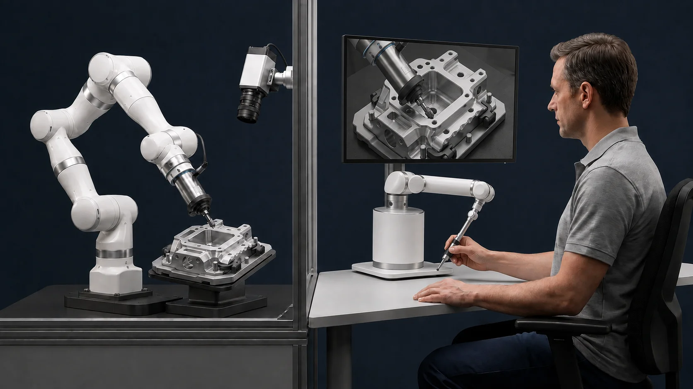
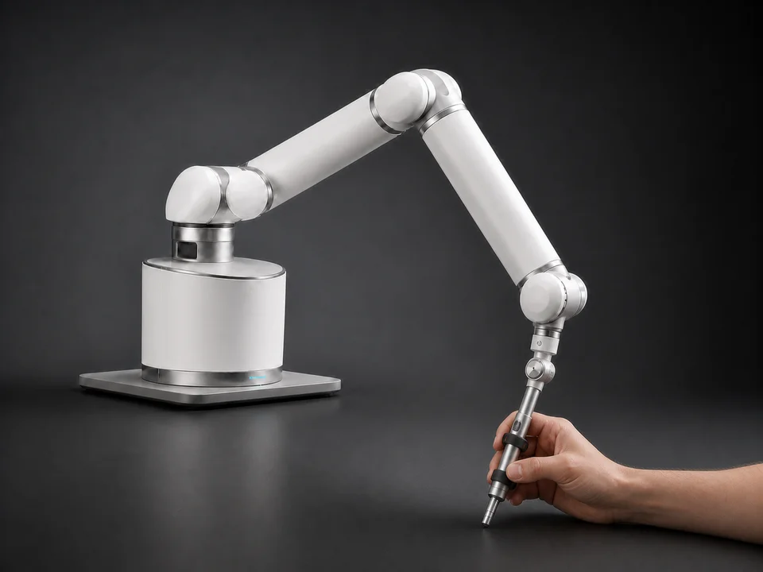

Every part is different
Small variations call for human judgment and adaptation.
Human-guided robotics
SYNA is developing a robotic system that lets skilled operators guide a tool and feel contact forces through a haptic interface.
Starting with precision finishing and deburring.

01 / The system
A two-way connection between the operator and the tool. This is the bilateral haptic system we are building.

The operator moves and orients a handle connected to a rigid, articulated haptic mechanism.
The robotic tool follows the operator’s movement and orientation at the workpiece.
Contact forces and moments return through the haptic interface, helping the operator respond to the task.
The operator stays in control. The robot acts as a physical extension.
02 / The first application
Finishing and deburring depend on continuous judgment: where to make contact, how much force to apply, and when to adjust.
In high-mix, low-volume production, parts change. Re-engineering conventional automation for each variation can be costly. Manual work remains adaptable, but fatigue and the availability of experienced technicians limit capacity.
Small variations call for human judgment and adaptation.
The tool must interact with a surface, not simply follow a path.
Precision work places sustained physical demands on experienced operators.
03 / In development
Our first system is being designed to support more stable, consistent execution and reduce the physical burden of precision work.
Support controlled tool motion while keeping process decisions with the operator.
Use human guidance to help accommodate changing parts and processes.
Over time, synchronized motion, force, visual, and process data could support intelligent guardrails, knowledge transfer, and gradual automation.
04 / Company
Founder · Algorithms & Control Systems Engineer
Tzahi brings experience in the defense industry, with expertise in advanced control systems, robotics, and deep learning.
He holds an M.Sc. in Autonomous Systems and Robotics and a B.Sc. in Mechanical Engineering from the Technion – Israel Institute of Technology.
Connect on LinkedIn